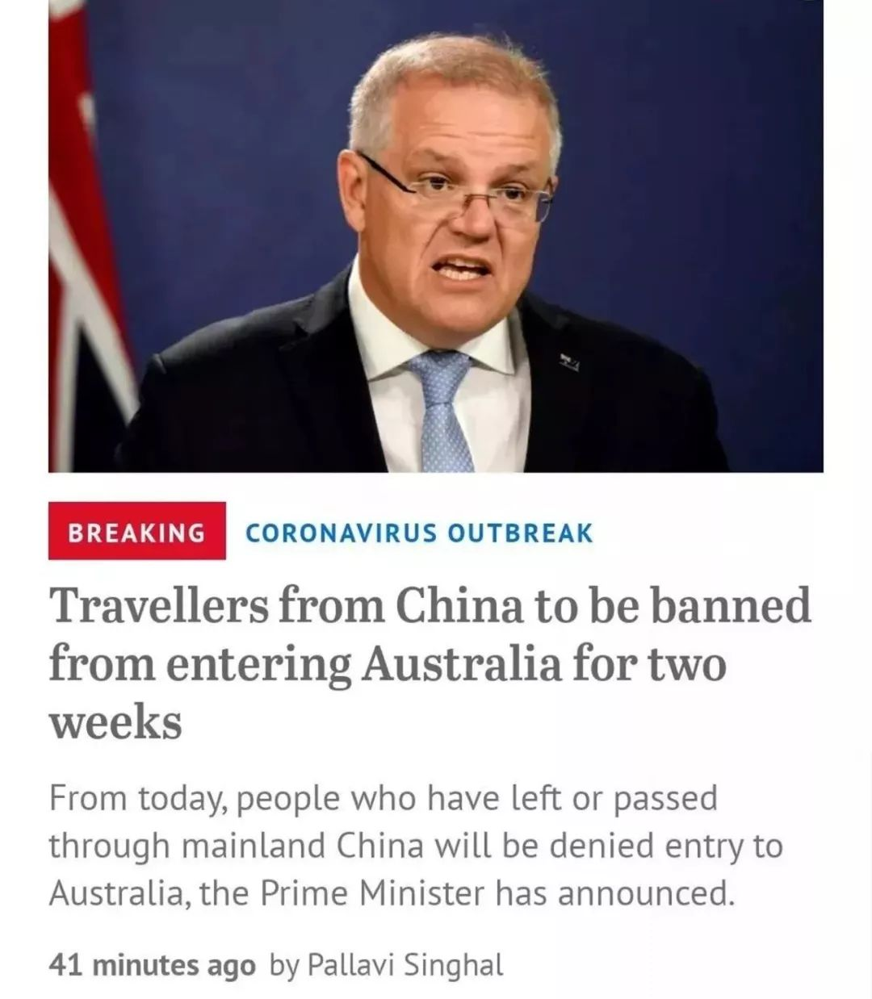
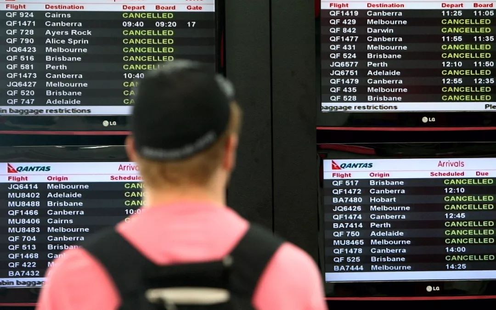
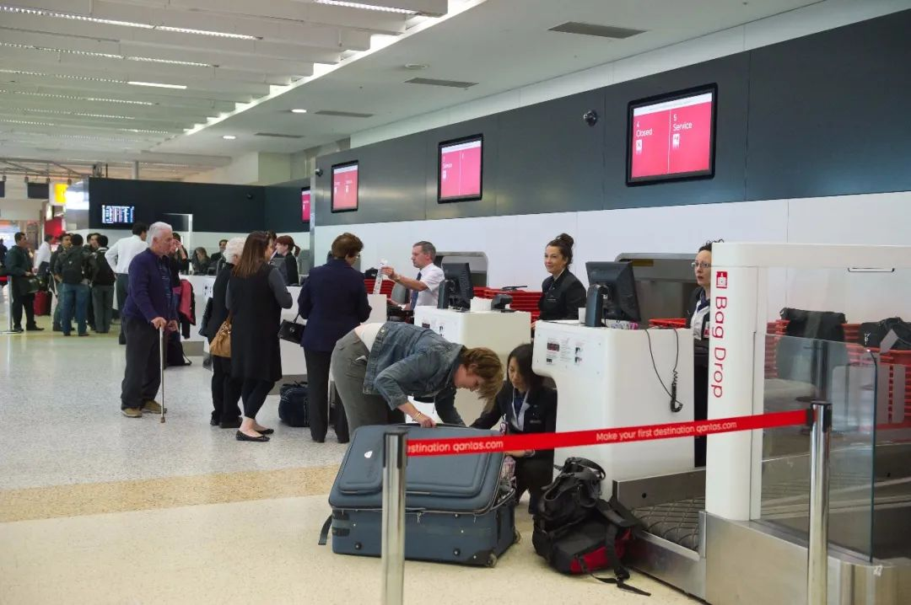
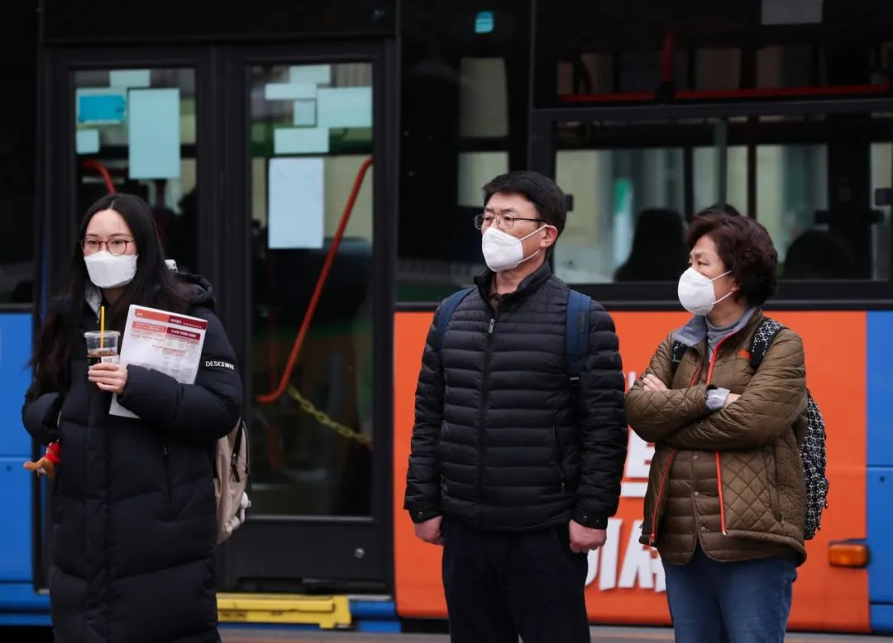

中国留学生面临选择：承受经济损失，还是改变留学计划？
原文链接 备份链接 新冠病毒疫情蔓延对已在海外就读的中国留学生造成影响，准备今年申请出国留学的中国学生也面临考试计划调整，即使通过考试并申请到入学机会，他们能否在今年夏天顺利入境澳大利亚等目的国，目前也充满变数 文 |《财经》 …
春节结束，学生本该开始上课，但新冠病毒仍在肆虐。教育部发文《利用网络平台“停课不停学”》，各地学校纷纷开通在线课堂，但也因此引发不少问题，老师感慨不想当主播，同学无奈不想上网课。
除了国内学子面临“失学”问题，海外留学生也受到疫情冲击。世界卫生组织在1月30日召开第二次紧急会议，宣布将新冠病毒肺炎列为最高警戒的“国际公共卫生紧急事件”（PHEIC）。一时间，各个国家采取了不同程度的措施，有的停航，有的封锁边境。
美国1月31号随即宣布，过去14天到过中国的非美国公民将禁止入境，美国公民和永久居民及其直系亲属除外，从美东时间2月2日下午5点开始执行。由于学制的原因，美国学校此时已经开学，只有部分因回家过年的语言课程学生可能受到影响，而且从宣布到执行仍有几天缓冲期。
身处南半球的澳大利亚中国留学生则没这么“幸运”。澳大利亚2月1号宣布过去14天入境过中国的非澳洲公民将禁止入境，当地时间下午5点立刻执行。此时的澳洲正值暑期长假，2月中旬才开始陆续开学，绝大部分学生被滞留国内，试图入境者还可能被注销学生签证。

2月1日，澳洲东部时间下午5:45分左右，澳洲总理莫里森和外交部长出席发布会，宣布从2月1号开始，如果澳洲PR和公民从中国返回澳洲，需要自我隔离14天
和澳洲类似的是新西兰，南半球的留学生集体面临“失学”危机。

集体“失学”
“大家都很烦，肯定会有一些抱怨，直接不让进，也不给缓冲期。”
Jens在墨尔本学习软件工程，原本这学期回去升大四， 这是他关键的最后一年。他需要跟着导师做一个项目才能毕业，这个项目在第一和第二学期分成A和B两个部分，先完成A才能继续做B。如果他错过这个学期的话，就意味着他会延毕一年。
“比如商科，中国留学生比较多。但我这个专业的中国人很少，还是以当地人为主，所以也就比较不会顾及我。”
澳洲政府2月1号出台禁令后，由于十分突然，移民局、海关、卫生部、教育部等各个部门的口径都不一致。这导致2月1号当天飞往澳洲的学生，有的城市允许入境，有的城市直接遣返，而2月2号入境的学生则有人被注销学生签证。
“当时已经在半路的人都受到影响，一点缓冲的余地也没有。我猜这些人可能没来得及反应，或有一点侥幸心理。”在新南威尔士念书的乐乐说。
从中国飞往澳洲大概需要十几个小时的飞机，来回就是二十几个小时。这个政策影响了约莫10万还未入境的留学生。

澳洲留学生群体在刚开始感到焦虑与愤懑。无法入境让他们不仅要面临延迟半年到一年毕业，还会造成不小的经济损失，例如一周的房租就是一到两千人民币，还有人租约到期却无法回去搬家，可能还要缴交违约金。生活同时变得一团乱。
还有一部分已经毕业的学生也受到影响。毕业后澳洲政府会给予2年工作签证，学生签证正常在3月中旬过期，更换工作签证需要本人在澳洲境内办理。如果不能在此之前入境，这些学生的前程也将受到影响。
不过，大部分学生还是表示理解，只是认为政策出台的方式太过武断。在新南威尔士念书的Josie表示：“我开始是很愤怒的，后来静下心来想一想，澳洲保护他们国家的人民，我是理解的，但出台政策的方式让我非常不满意。不仅是我们留学生，当地学校也都措手不及。我觉得自己没被尊重。”
政策一直在朝令夕改，这让学生更加不知所措。关于是否可以通过第三地待满14天后入境的政策，官方也是改了又改，留学生在咨询完澳洲各个部门后仍得不到确切的答覆。

有的学生觉得去第三国待14天太过冒险，在外面有交叉感染的风险，生病后医疗难以得到保证；也有学生因为一些迫切的原因必须回去，所以选择了签证相对比较容易申请的泰国、马来西亚、迪拜等国家，打算14天后尝试“曲线回澳”的入境策略，这在当时都还不知是否能成功。
澳洲的禁令不仅让留学生面临困境，对于学校来说也面临经济上的巨大损失。乐乐表示：“留学本来就是澳洲本地非常大的创收产业，没有中国留学生，学校和政府就少了这一块的收入，而且中国留学生对当地餐饮和消费业也有很大的拉动力。”

请愿者
澳洲政府的禁令出台后，不同学校都有不同的应对措施。新南威尔士建筑系的Josie、Kai、Eugenia、Phamo、Michael等两百多名建筑系学生，一起给系上写了封请愿信。
“我们之所以决定做这件事，是因为最开始学校发了一封安慰信，说会出台网课，保证大家的教学质量。但建筑系要做模型、画图、和老师讨论，这个专业的特殊性让我们很难接受网课。”
争取自己的权益之前，留学生也先征求了当地学生的意见。“人不能太想自己，我们也问了当地学生，延迟开学、调整课程等建议他们是否介意，得到的反馈是大家都很支持和帮忙。”
学生们建了一个微信群，很快新南威尔士建筑系的学生就进入群组。大家通过自发的力量，有人整理问题和诉求，有人统计，有人负责写信，有人翻译，整个过程大概一天就完成了。

某澳洲留学项目的群聊内容（图源网络）
这封请愿信发出后，取得了系主任积极的回应。系主任连夜加班、商讨政策，尽最大可能让学生不要延期毕业，例如很多原本仅在第一学期开放的课程也会安排在第二学期开放等。
Sophia是当地华裔，她也很热心地参与请愿的召集。作为当地人，她更知道如何用合适的方式与老师沟通。“我一方面理解政府的政策，为了保证当地人安全，另一方面也觉得对学生很不负责任，校方的处境也很尴尬。”
也有学生直接向澳总理请愿，请愿的学生之一Lily说：“我觉得大家都只是在群里说这个事情，都是学校在联系总理。”
这封写给总理的请愿书最后收集到约250份签名。Lily也知道人数不多，得到回应的希望并不大，但仍希望为引起重视，尽一份微小的力量。

“幸运儿”和“不幸者”
小婧是那个踩着点入境的“幸运者”。
由于疫情的持续升级，小婧的父亲怕孩子受到影响，一直希望她改签早点回去澳洲。1月30号晚上，一家人一起等待世界卫生组织的会议结果，当新冠病毒被列为最高警戒的“国际公共卫生紧急事件”，他们立刻改签，清晨匆忙收拾行李，1月31号晚上从香港搭飞机回去。
小婧在2月1号早上7点30抵达澳洲，刚入境没多久，澳洲就颁布了禁令。不过她也不是当天最后一批入境的人，因为禁令从当天五点开始，所以有的城市五点之前仍有人可以入境。
让小婧讶异的是，当天澳洲机场也没有采取任何措施。出境的时候她填了“健康申报表”，量了好几次体温，但到了澳洲完全没填任何表格，也没测体温，一切如故，只有广播里有通知。所以当天她得知澳洲颁布禁令后，觉得很突然。

尽管和大部分学生相比，小婧很幸运可以正常上学，但这不代表她没受到影响。
学业上少了不少可以一起讨论的同学，生活上合租的室友都没回来。小婧在情感上也很受打击，她九成的朋友都滞留国内，“感觉像一个人逃难回来。虽然我很幸运回来了，其他人的确情况比我糟糕多了，但我心理上、情绪上也不好跟人家说。”
小婧现在的临时室友Wei也很惨，因为被房东赶出来，只好先住在她家。
Wei不是留学生，在当地有工作，已在澳洲10年之久。她也是乘坐1月31号的飞机回到澳大利亚，还没下飞机Wei就和房东说明情况和疫情。Wei表示自己过去两周都在家里，也没有症状，之后公用的东西都分开使用，在家尽量不和房东见面，从自己房间出去会戴口罩，房东答应了。
在家睡了一晚后，房东让Wei离开14天，并且需要在医院做过检查后才能搬回家里。房东说自己年纪大了，也询问了医院、律师等，被告知不能和Wei一起住。Wei表示理解，但希望可以退还这两周的房租，但房东认为Wei是那个从中国回来的人，责任在她，经过协商后暂定房租一人一半。
搬出去第二天，房东又让Wei回去家里消毒，从中国带来的东西都要消毒，包括Wei自己的房间。Wei觉得房东反应过激了，但不想引起争论，也就照做了。房租的事情仍然没谈拢。对Wei来说，严格意义上讲，她回来的那天政府也还未让从中国回来的人进行自我隔离。
2月21日，澳大利亚政府发布消息称，两名从“钻石公主”号游轮撤离的澳大利亚公民，已确诊感染新冠肺炎
“我可以理解房东的担心，我去外面住也完全出于好心，但这个好心不应该由我买单。而且房东还威胁说要去移民局举报我，说我对社区和社会不负责，说我回去住就是置她于死地。”
这期间Wei的房东出去旅行，她也通过第三方仲裁法庭确认房东侵权和违约，当她想回去把东西都搬出来时，发现屋子还加了另一道锁。最后可能因为担心还要赔偿，房东也知道自己没道理，就退回了房租和押金，一切得到妥善解决。
“她和我说话的态度，让我觉得自己就是一个行走的病毒。但凡稍微客气点，我都不会采取这样的行动。”
当然，这只是极端案例。我采访的留学生都说，虽然当地媒体有一些负面的报道，也听闻过一些零星的歧视性事件，例如公车不停、咖啡馆打出不友善标语；但整体的社会氛围，并未因为疫情感受到太多异常，身边的老师、同学也都非常关心他们，毕竟澳洲是个文化包容的移民国家。

“曲线回澳”
Micheal原本定的2月14号回去澳洲，禁令颁布后，他2月5号开始筹划从泰国入境澳洲，因为他朋友打电话给海关，得到的消息是可以在第三地待满14天后返澳。
“现在有人在国内观望，可能会错过第一个学期的入学时间。我们这帮打算走第三地入境的，如果政策允许的话，还是可以开学，但要等到2月14号后才能知道是否真的可以入境。”
仅Micheal所知就有两三百学生在泰国，数字还在不断增加。
“泰国人民很热情、友好，路边也有很多广告牌，写着支持武汉、支持中国等标语。泰国总理也说不会取消中国的落地签证。但泰国人也开始戴上口罩，便利店也买不到口罩了。”

虽然也会担心交叉感染的问题，Micheal说自己尽量不去人多的地方，坐车会戴着口罩并使用酒精消毒。
从第三地中转虽然也是一笔开销，但Micheal觉得，即便澳洲政府让中国留学生可以马上回去，航空公司也已经减少航班，一票难求。现在泰国直飞澳洲的票价都在一万到一万五千元人民币以上，原本可能只有三四千元人民币，而且也会面临买不到票的问题，转机的话又会面临其他国家禁止中国人转机的问题。
Jenny则不愿意选择第三地入境的方案。“我可以理解澳洲政府的决定，肯定要先对自己的国民负责。但对比其他国家，新加坡限制游客，不限制拿学生签证的人。我们很乐意配合隔离政策，但澳洲没给我们这个机会。就算可以第三地入境，风险都转嫁到留学生和第三国身上，第三地中转像是澳洲政府给我们的一条路，有点像是想要学费，同时不想有一点风险。”
2月14日过后，学生们也都很关心是否有成功入境的案例。Micheal告诉我，部分学生入境了，部分被航空公司拒绝办理登机，滞留机场等待通知和改签。这取决于航空公司和澳洲政府对于14日的定义，究竟是到达澳洲时是14日，还是离开泰国时是14日。

2月20日下午，澳大利亚总理莫里森宣布：澳洲政府决定继续延长入境限制令到2月29日
“现在看来第三地中转可以，稳重起见还是多待几天。”然而落地签的有效时间是15天，所以还需要申请签证延期。改签费用大概是350元人民币，改签机票要4千元人民币以上，由于航班少了，每天情况也都不一样。
目前，澳洲的禁令仍未解除，并宣布继续延期到2月29日。有的学生选择继续等待，也有越来越多学生准备通过第三地中转。和澳洲相似的还有同在南半球的新西兰，新西兰的禁令延期到2月24日，新西兰留学生和澳洲留学生面临同样的困境。
对比几个留学热门国家，就目前看来，影响最大的是澳洲和新西兰的中国留学生。俄罗斯自莫斯科时间2月20号零时起，禁止包括持学习签证在内的中国公民入境，部分春季开学的俄罗斯留学生也将受到影响。
英国、德国、法国、加拿大等国都没有采取严格的入境管制；美国虽然有入境管制，但因为学制的关系，对一般留学生影响不大，而且美国在宣布入境管制后给了几天缓冲期。
在亚洲，日本限制有湖北和浙江旅行史的非本国公民入境，而学制的关系对日本留学生影响也不大；新加坡限制有中国旅行史的非本国公民入境，但拥有长期学生签证的留学生得以入境。
下一波会受到影响的可能是韩国留学生。韩国3月开学，除了禁止有湖北旅行史的非本国公民入境外，其他省份的中国留学生目前不受影响，各个学校提出了因应措施。

韩国疾病管理本部21日宣布，韩国当天新增52例新冠肺炎确诊病例，累计确诊患者上升至156例。图为韩国民众在光化门附近等待过马路
以韩国湖西大学为例，本科生开学时间由原来的3月2日延期到3月16日；入境的学生必须隔离两周（无论国籍，有中国旅行史者入境韩国都需隔离），自行租屋的学生在租屋处隔离，申请校内公寓的学生最好在24、25两日入境，一人一间，学校会统一提供餐饮和生活用品；在外自行隔离和校内公寓隔离的学生，学校都会提供一定防护用品。
韩国副总理兼教育部长此前要求避免疫情下排斥中国留学生，但教育部的管控方案也受到当地社会质疑。随着疫情的升级，韩国教育部建议尚未入境的中国留学生休学一学期或采用远程课程，但这些都不是强制性规定，只是给无法按时入境的留学生一个选择。教育部同时表示，3月开学以后，只要发生师生确诊案例，该所学校就可能面临停学。
除了目前正面临开学难题的留学生，各个国家春季本该陆续入学的语言课程学生，也都会受到不同程度的影响。
无论是国内学子的网课难题，还是中国留学生的入境困难，在疫情仍不明朗的当下，所有人都如同深陷泥潭无法动弹。
原文链接 备份链接 新冠病毒疫情蔓延对已在海外就读的中国留学生造成影响，准备今年申请出国留学的中国学生也面临考试计划调整，即使通过考试并申请到入学机会，他们能否在今年夏天顺利入境澳大利亚等目的国，目前也充满变数 文 |《财经》 …
原文链接 备份链接 疫情期间，在清北网校与福州鼓楼小学开发的“空中课堂”，挤进了超过7万名学生。其中除了沿海城市的孩子，还有来自甘肃岷县、陕西延安杨家岭等贫困山区的8000名孩子。地隔南北、贫富不一的孩子们，在一个偶然契机中，坐在了“同 …
原文链接 备份链接 （图源：Coronavirus COVID-19 Global Cases, by Johns Hopkins CSSE） 当新型冠状病毒正在全球蔓延开来时，人们的生活受到了什么样的影响呢？本期围炉特稿，来自世界不同国 …
原文链接 备份链接 新冠肺炎疫情来势汹涌，波及了人们生活的方方面面。长租公寓市场的两家头部企业：蛋壳和自如，先后被推上了风口浪尖。 文 | 谢婵 薛雨霏 编辑 | 沈小山 新冠肺炎疫情来势汹涌，波及了人们生活的方方面面。长租公寓市场的两 …
原文链接 备份链接 “漂浮的监狱” 巨型豪华邮轮百慕大籍“钻石公主号” 2月18日晚上七点半，钻石公主号游轮上响起广播，提醒乘客注意自己的房间门口放着的一封信。乘客们必须迅速打开门，捡起信，再关门。除了两天一次的放风，他们不允许离开 …